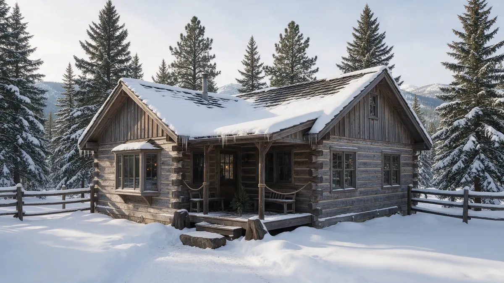

Woodland Park CO Plumber Handbook

A Woodland Park CO plumber works in conditions most of the Front Range never faces. This handbook covers what to do, what to watch for and what to ask, with the realities of Teller County in mind. Plumbing Pros Colorado is a referral line that connects callers with independent local plumbers who do the work. It is not a plumbing company itself.
Immediate response to a burst or leak
Shut the main valve first, and on a well system, switch off the pump at the breaker. Open a faucet to drain what remains. A frozen pipe that has not yet split should be thawed gently with warm air from a hair dryer, never an open flame.
If you see ice on a pipe and water is not flowing, open the tap so melting water has a path out. Once thawed, check for drips along the pipe before leaving it.
- Close the main
- Switch off the well pump
- Open a faucet
- Warm frozen pipe slowly
- Check along the whole run for drips
Signs to look for in a mountain home
Woodland Park sits above 8,000 feet, well above the Front Range cities. Frost penetrates deeper, and cold air pools in low areas around town. Look for frost on pipes in crawl spaces, stained insulation, tap pressure that drops at the coldest hours, and fixtures that gurgle.
If you use a pressure tank, a pump that starts often without use or a gauge that falls steadily points to a leak somewhere in the system.
Ask your neighbors who have lived in Woodland Park a long time how their pipes have fared. They often know which walls are cold, which roads close first and which services respond in a storm.
How a plumber works a mountain call
Expect questions about your water source, heat, and when the house was last occupied. Roads such as US-24 and the county roads toward Divide and Lake George can be icy, and the plumber may need to plan around weather. Share the safest route to your property.
On site, the plumber will trace the supply from source to fixtures. Cabins often have long runs and added bathrooms, so tracing takes time. For septic questions, a septic specialist may be the right next call.
If a line has split in a wall, try to find where water is escaping before cutting. Moisture on the surface may be far from the split, and a careful plumber will trace it rather than cut randomly.
Ask the plumber
What failed, and was it freeze damage or wear? Is the pipe PEX, copper or something else, and how will it be protected? Does the line need insulation, heat cable or rerouting out of an exposed wall?
Ask about steps to restart the system safely after a repair, including priming a pump or bleeding air. The plumber is independent, so settle details with them directly.
Because many Teller County lots have rock close to the surface, a buried line may be shallow in some spots and deep in others. Frost depth, bedding and line route are part of a good conversation with the plumber.
Repair or replace in the mountains
A single split from a one-time freeze can often be repaired. A line that has frozen again and again, or one that runs through an exposed crawl space, may be better rerouted or insulated. Also consider the age of a water heater, pump and pressure tank.
If your property includes a long buried line from a well or spring, ask how the plumber would locate and reach it. Rocky ground near the foothills of Pikes Peak can limit options.
Cabin owners should keep a short written shutdown and startup routine near the main. It should list which valves to close, which taps to open, and how to refill and bleed air from the system.
Seasonal homes and winterizing
Many properties near Mueller State Park and in the Pike National Forest area are seasonal. Before leaving, shut off the main, drain lines, open taps and add antifreeze to traps only as a plumber advises for your system.
Ask a neighbor to check on the property after storms and power cuts. A house that drops below 32°F can have a split pipe that only leaks when the weather warms.
When the plumber finishes, ask for the settings of any pump or pressure switch to be written down. If a power outage resets the system, you will know how to restore it, and a visiting house sitter will too.
Frequently asked questions
Is Woodland Park known as the City Above the Clouds?
Yes, that is its nickname, a nod to its altitude on the west side of Pikes Peak. For plumbing, altitude means colder winters and deeper frost, which is why insulation and shutoff habits matter. Make sure the heater has a safe clearance and a pan before restarting after a freeze, since a damaged tank may leak under load.
Should I drain my pipes before a trip?
For a longer winter absence, draining is a sound option if you know how, but heated homes can instead stay warm. If you drain, open all taps, flush toilets, and drain the water heater as its manual says. Winter wind often drives cold air through crawl space vents, so seal them before the first hard freeze.
Why is my water pressure low in winter?
Partial freezing, a failing pressure tank, a clogged filter or a leak can all lower pressure. Check other taps, the well gauge and filters. If it persists, a plumber can test each part of the system. Most pumps have a rating for cycles per hour. Frequent cycling without water use usually signals a leak or failing tank.
Can I use heat tape myself?
Heat tape must be rated for your pipe type and installed as the label directs. Misuse can start a fire. A plumber or electrician can choose and install it, and check it each fall. Run the system for a day after any thaw and look for new wet spots before you leave the property again.
Who do I call about a septic backup?
A septic backup is generally handled by a septic contractor. A plumber can check inside the house for clogs and supply leaks, and tell you which type of specialist to call. A neighbor with a spare key can shut the main if a pipe fails while you are away.
Plumbing services in Woodland Park
- Water Leak Repair
- Emergency Plumbing
- Drain Cleaning
- Water Heater Services
- Sewer Line Repair
- Gas Line Services
- Slab Leak Repair
- Pipe Repair & Replacement
- Toilet Repair
- Bathroom Plumbing
Nearby Colorado cities
- Water leak repair in Westminster
- Water leak repair in Lakewood
- Water leak repair in Golden
- Water leak repair in Conifer
Ready to talk to someone? Call (720) 794-0974 or visit a plumber for Teller County homes.